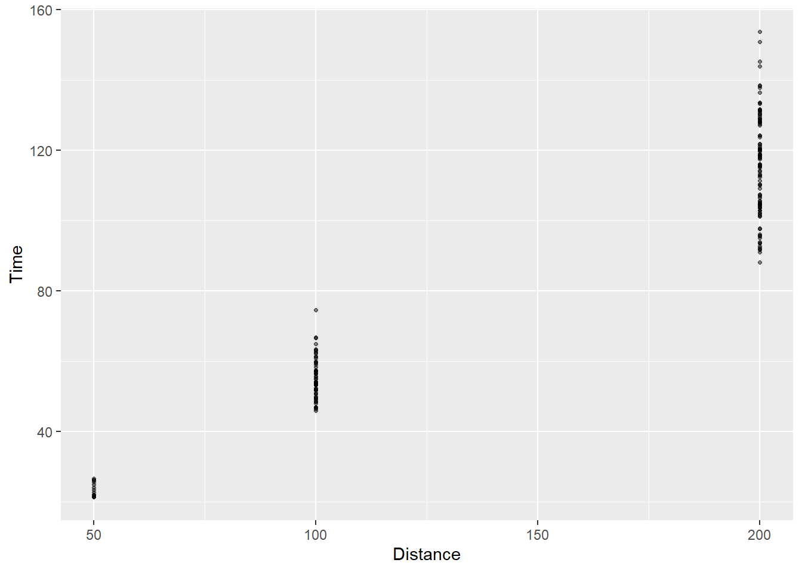
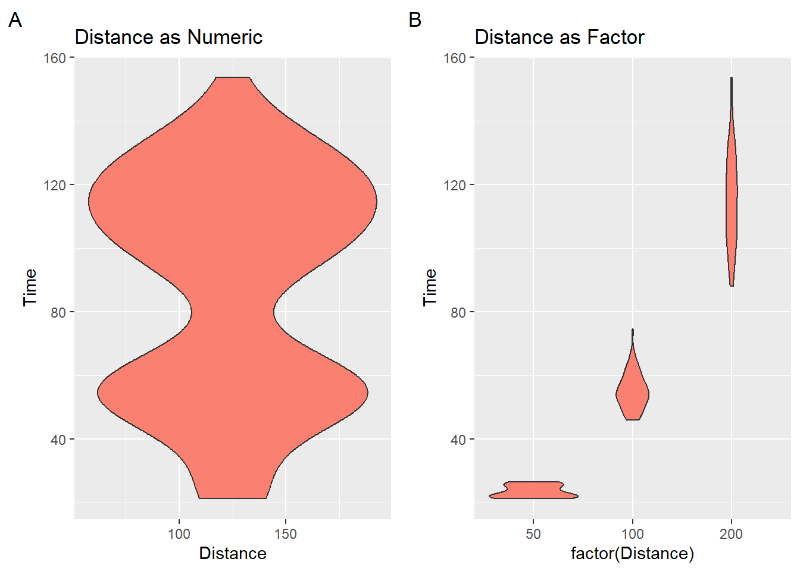
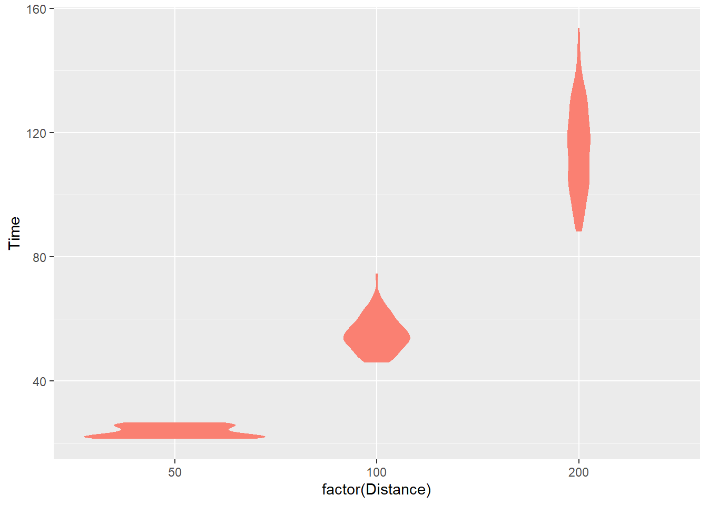
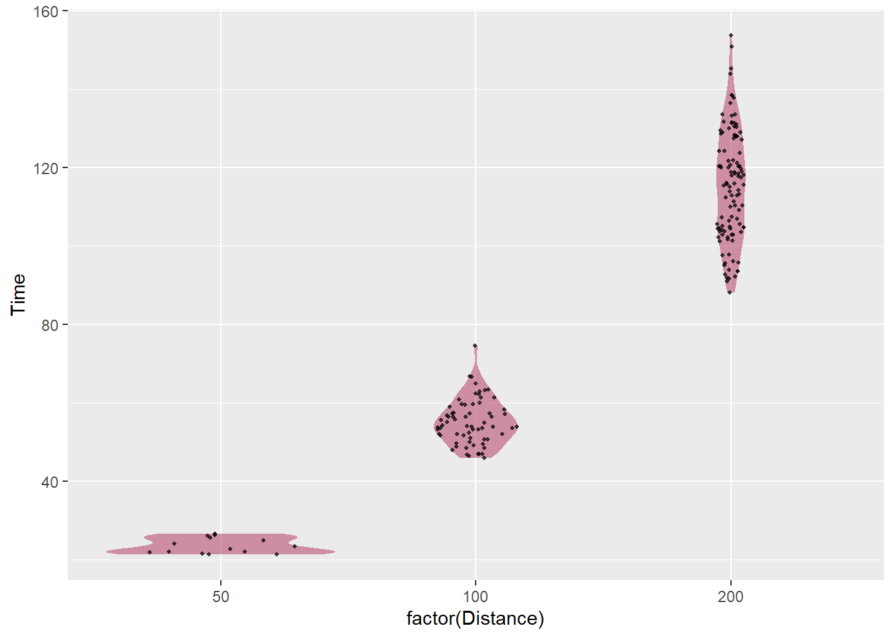
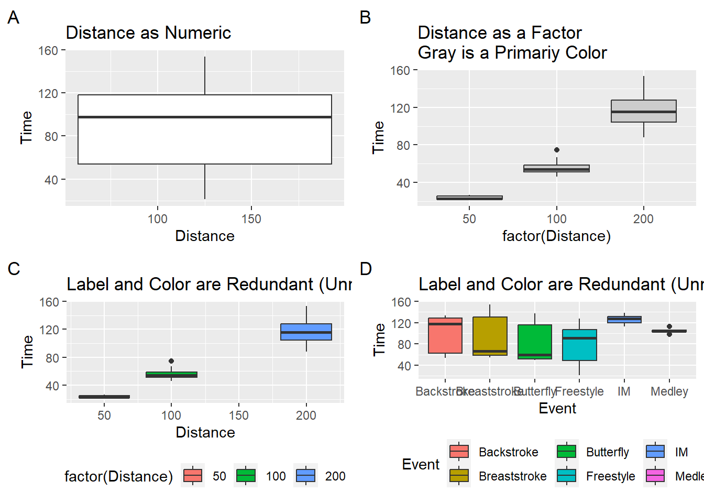
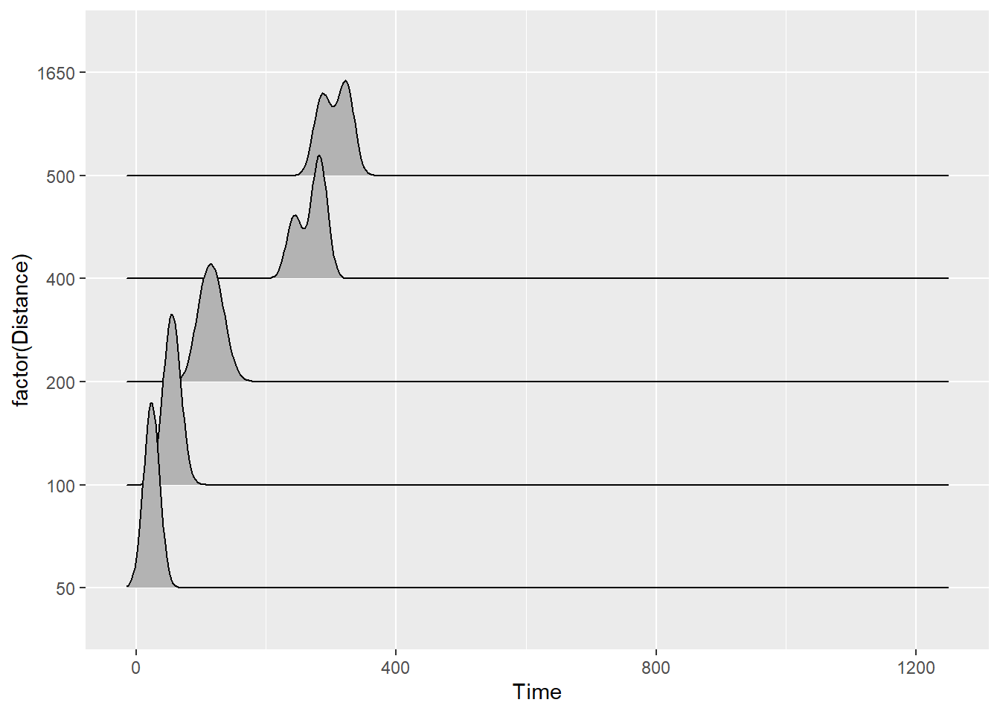
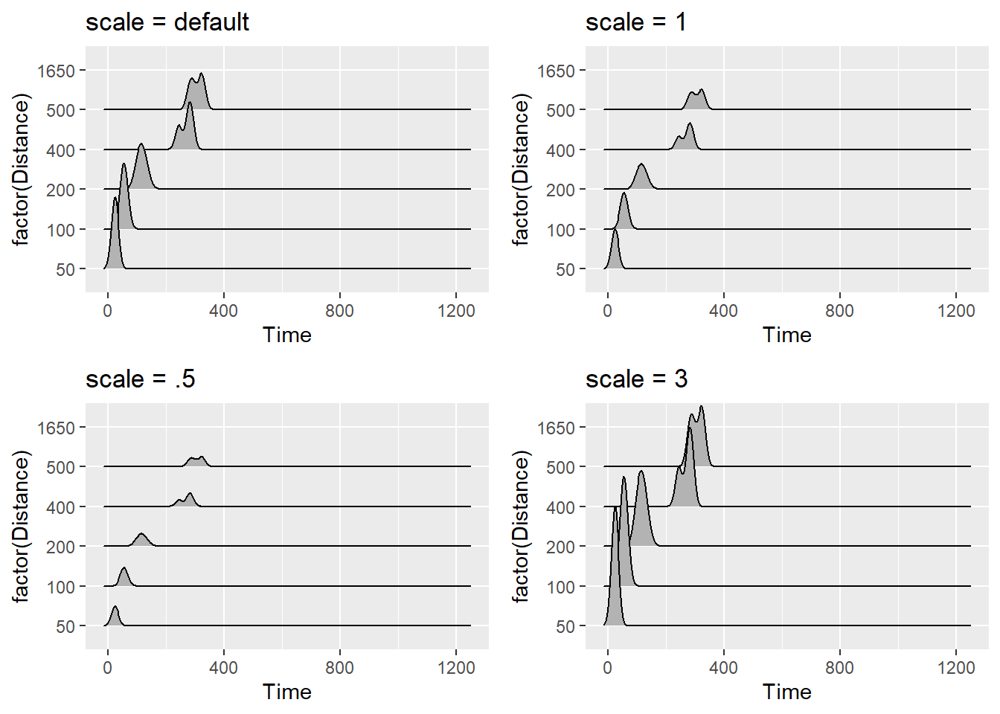
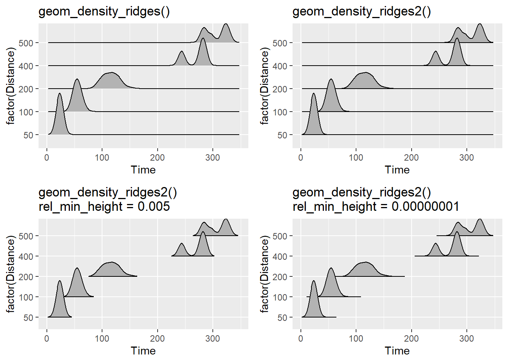
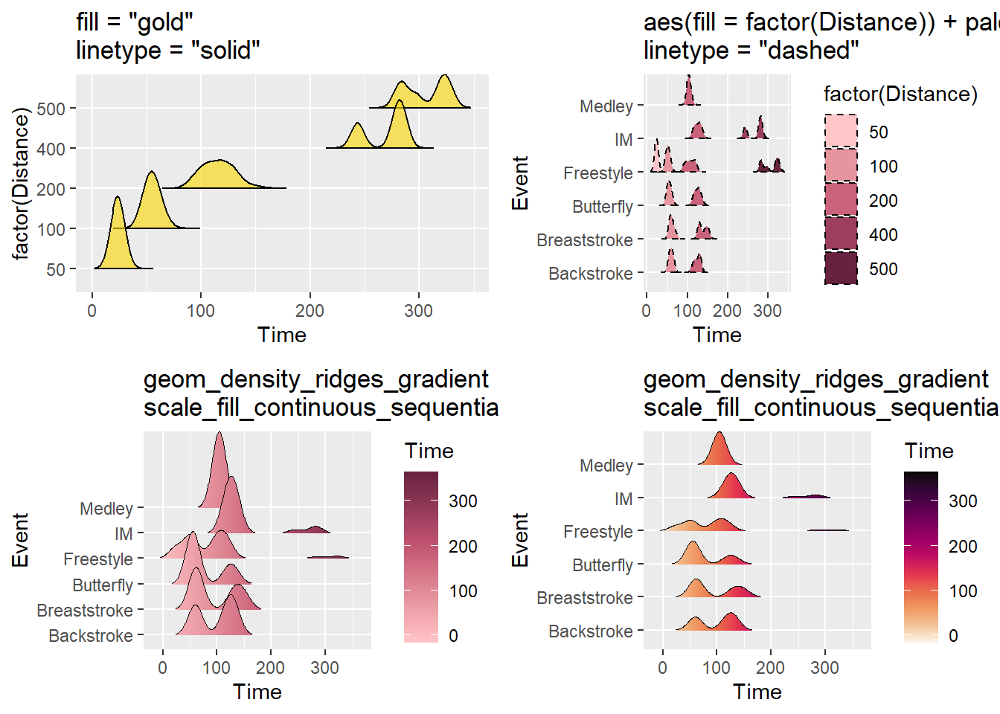
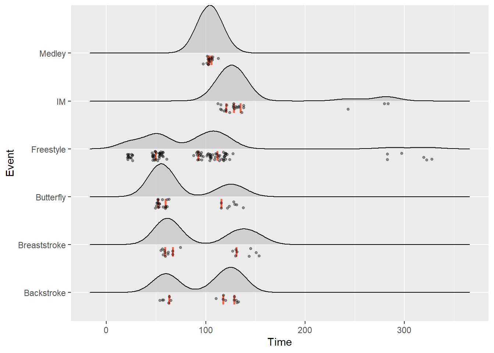

source(here::here("r", "my_functions.R"))Visualizing more distributions
Under construction.
This page is a work in progress and may contain areas that need more detail or that required syntactical, grammatical, and typographical changes. If you find some part requiring some editing, please let me know so I can fix it for you.
Overview
We have addressed visualizing certain types of data distributions before, in particular, when using geom_histogram() and geom_density(). We will also address more ways to visualize distributions in modules on visualizing uncertainty. This module introduces some additional approaches and introduces the {ggridges} library to assist.
To Do
Readings
Reading should take place in two parts:
- Prior to class, the goal should be to familiarize yourself and bring questions to class. The readings from TFDV are conceptual and should facilitate readings from EGDA for code implementation.
- After class, the goal of reading should be to understand and implement code functions as well as support your understanding and help your troubleshooting of problems.
Before Class: First, read to familiarize yourself with the concepts rather than master them. Understand why one would want to visualize data in a particular way and also understand some of the functionality of {ggplot2}. I will assume that you attend class with some level of basic understanding of concepts.
Class: In class, some functions and concepts will be introduced and we will practice implementing {ggplot2} code. On occasion, there will be an assessment involving code identification, correction, explanation, etc. of concepts addressed in previous modules and perhaps some conceptual elements from this week’s readings.
After Class: After having some hands-on experience with coding in class, homework assignments will involve writing your own code to address some problem. These problems will be more complex, will involving problem solving, and may be open ended. This is where the second pass at reading with come in for you to reference when writing your code. The module content presented below is designed to offer you some assistance working through various coding problems but may not always suffice as a replacement for the readings from Wickham, Navarro, & Pedersen (under revision). ggplot2: Elegant Graphics for Data Analysis (3e).
External Functions
Provided in class:
view_html(): for viewing data frames in html format, from /r/my_functions.R
You can use this in your own work space but I am having a challenge rendering this of the website, so I’ll default to print() on occasion.
Libraries
- {dplyr} 1.1.2: for selecting, filtering, and mutating
- {magrittr} 2.0.3: for code clarity and piping data frame objects
- {ggplot2} 3.4.3: for plotting
- {ggridges} 0.5.4: for plotting ridgeline plots
- {ggforce} 0.4.1: for plotting sina plots
Load libraries
library(dplyr)
library(magrittr)
library(ggplot2)
library(ggridges)Loading Data
For this exercise, we will use some data from a 2023 CMS swim meet located at: “https://github.com/slicesofdata/dataviz23/raw/main/data/swim/cleaned-2023-CMS-Invite.csv”.
SWIM <- readr::read_csv("https://github.com/slicesofdata/dataviz23/raw/main/data/swim/cleaned-2023-CMS-Invite.csv",
show_col_types = F)Strip Chart
Strip charts (aka stripplots) are basically one dimensional scatter charts. We have seen these before when we plotted scatter plots using geom_point(). True scatter plots contain numeric/continuous data. When either the x or y variable is categorical in nature, a point plot will visualize the distribution of values of y (or x) at each categorical level of x (of y). Although the data contain x and y data, point plots involving one categorical variable does not show the distribution of data along that axis because there is no such distribution. Stripcharts represent this type of geom_point() plot for which the distribution of the numeric variable is visualized at each level of the categorical level. Thus, stripcharts are one dimensional in that way.
A basic strip chart. Points appear as a strip with no jitter:
SWIM %>%
filter(Distance < 300) %>%
ggplot(.,
mapping = aes(x = Distance, y = Time)) +
geom_point(
size = 0.9,
alpha = .5
)
Strip chart with jitter:
SWIM %>%
filter(Distance < 300) %>%
ggplot(.,
mapping = aes(x = Distance, y = Time)) +
geom_point(
size = 0.9,
alpha = .5,
position = position_jitter(
width = 15, # horizontal jitter
height = 0, # vertical jitter
seed = 167 # good to set seed for reproduction
)
)
Strip charts, of course, do not easily convey density information. We can change the opacity of points to help the visual system utilize something like shade or contrast to see when there are clusters of points but other visualizations communicated this density much better.
Violin Charts using geom_violin()
We used geom_histogram() and geom_density() to visualize the shape and density of a distribution of data. When the density distribution is mirrored, we have violin plots. Violin plots essentially represent the same information as a geom_density() but they typically represent the data in a vertical structure. In a way, violin plots use up twice the ink to convey the same information about the distribution’s density. What some refer to as half violins are essentially density distributions.
When plotting violin plots using geom_violin(), you should be careful to convert numeric vectors with factor() or as.character() or you will get something what you are not expecting.
geom_violin(
mapping = NULL,
data = NULL,
stat = "ydensity",
position = "dodge",
...,
draw_quantiles = NULL,
trim = TRUE,
scale = "area",
na.rm = FALSE,
orientation = NA,
show.legend = NA,
inherit.aes = TRUE
)numeric_plot <- SWIM %>%
filter(Distance < 300) %>%
ggplot(.,
mapping = aes(x = Distance, y = Time)) +
geom_violin(
fill = "salmon" #, color = NA
) + labs(tag = "A", title = "Distance as Numeric")
factor_plot <- SWIM %>%
filter(Distance < 300) %>%
ggplot(.,
mapping = aes(x = factor(Distance), y = Time)) +
geom_violin(
fill = "salmon" #, color = NA
) + labs(tag = "B", title = "Distance as Factor")
suppressMessages(
plot(gridExtra::arrangeGrob(numeric_plot, factor_plot, ncol = 2)
)
)
Remove the outline
If you don’t want the outline, color = NA or color = "transparent".
SWIM %>%
filter(Distance < 300) %>%
ggplot(.,
mapping = aes(x = factor(Distance), y = Time)) +
geom_violin(
fill = "salmon", color = NA
)
Sina Plot
If you are going to use geom_violin(), you will find that your points do not cooperate nicely with the density distribution. A better alternative is the sina plot. A geom_sina() is available in the {ggforce} library and is useful when your goal is to visualize a single variable in a multiclass data set. From this perspective, it is a dressed up jittered strip chart but for which the jitter is controlled by the density distribution of the data within each class.*
stat_sina(
mapping = NULL,
data = NULL,
geom = "point",
position = "dodge",
scale = "area",
method = "density",
bw = "nrd0",
kernel = "gaussian",
maxwidth = NULL,
adjust = 1,
bin_limit = 1,
binwidth = NULL,
bins = NULL,
seed = NA,
jitter_y = TRUE,
...,
na.rm = FALSE,
orientation = NA,
show.legend = NA,
inherit.aes = TRUE
)SWIM %>%
filter(Distance < 300) %>%
ggplot(.,
mapping = aes(x = factor(Distance), y = Time)) +
geom_violin(
fill = "maroon",
alpha = .5, # not too strong
color = NA # omit the outline
) +
ggforce::geom_sina(seed = 167, # make reproducible
size = .7, # smaller than default
alpha = .7 # a little transparent
) 
Box-and-Whisker plots
A box plot is short for box-and-whisker plot, which was introduce by statistician John Tukey. The goal of the visual is to provide 5 pieces of statistical information. Those pieces compose the whisker length and box shape. The box contains information for the 25th, 50th, and 75th percentiles and the whiskers provide information for the 0th and 100th percentiles.
geom_boxplot(
mapping = NULL,
data = NULL,
stat = "boxplot",
position = "dodge2",
...,
outlier.colour = NULL,
outlier.color = NULL,
outlier.fill = NULL,
outlier.shape = 19,
outlier.size = 1.5,
outlier.stroke = 0.5,
outlier.alpha = NULL,
notch = FALSE,
notchwidth = 0.5,
varwidth = FALSE,
na.rm = FALSE,
orientation = NA,
show.legend = NA,
inherit.aes = TRUE
)Five-Number Summary
Tukey wanted box plots to visualize high-level summary information as a Five-number Summary.
- minimum point: 0th percentile point excluding any outliers
- first quartile: 25th percentile
- second quartile 50th percentile (median)
- third quartile: 75th percentile
- maximum point: 100th percentile point excluding any outliers
Depending on the box plot created, the whiskers may terminate a the upper and lower extremes in order to visualize minimum and maximum values of the data. Alternatively, the whisker may frame out 1.5 times the interquartile range.
Distributional Information
Box plot Density
If you know how to examine box plots, information about the distribution’s density is also visually present, making helpful identifying whether distributions are skewed negatively or positively and are leptokurtic or platykurtic. When the bottom whisker is long and the top is short, you will have a distribution with a long lower tail, making is skewed negatively. When the opposite is true, the distribution will be skewed positively.
Interquartile range (IQR)
Similarly, the interquartile range (IQR) can be extracted as it represents the distance between the upper and lower quartiles. The box itself frames out the IQR.
Examples
Box plots can be used to visualize the distribution for a single set of data or, like strip charts and violin plots, for displaying distributions of a variable across many categorical groups. As with violin plots, you will have to be mindful of your data structure and convert numeric variables to categorical as seen here.
numeric_plot <- SWIM %>%
filter(Distance < 300) %>%
ggplot(.,
mapping = aes(x = Distance,
y = Time,
group = 1 # need to set group to avoid error
)
) +
geom_boxplot() +
labs(tag = "A", title = "Distance as Numeric")
factor_plot1 <- SWIM %>%
filter(Distance < 300) %>%
ggplot(.,
mapping = aes(x = factor(Distance), y = Time)) +
geom_boxplot(fill = "grey80") +
labs(tag = "B", title = "Distance as a Factor\nGray is a Primariy Color")
factor_plot2 <- SWIM %>%
filter(Distance < 300) %>%
ggplot(.,
mapping = aes(x = Distance, y = Time)) +
geom_boxplot(mapping = aes(fill = factor(Distance))) +
theme(legend.position = "bottom") +
labs(tag = "C", title = "Label and Color are Redundant (Unnecessary)")
factor_plot3 <- SWIM %>%
filter(Distance < 300) %>%
ggplot(.,
mapping = aes(x = Event, y = Time)) +
geom_boxplot(mapping = aes(fill = Event)) +
theme(legend.position = "bottom") +
labs(tag = "D", title = "Label and Color are Redundant (Unnecessary)")
suppressMessages(
plot(gridExtra::arrangeGrob(numeric_plot, factor_plot1,
factor_plot2, factor_plot3,
ncol = 2)
)
)
And of course, the colors, lines, and other aesthetics are customization.
Ridgeline Plots with ggridges::geom_density_ridges()
geom_density_ridges(
mapping = NULL,
data = NULL,
stat = "density_ridges",
position = "points_sina",
panel_scaling = TRUE,
na.rm = FALSE,
show.legend = NA,
inherit.aes = TRUE,
...
)When you plot ridge line density plots, remember that you are plotting the distribution of a variable along the x-axis. Along the y-axis will be the level of the groping variable.
Using the SWIM data, if you execute the following code:
SWIM %>%
ggplot(., aes(x = Time, y = Distance)) +
geom_density_ridges()You will receive this warning message:
The following aesthetics were dropped during statistical transformation: y
ℹ This can happen when ggplot fails to infer the correct grouping structure in the data.
Did you forget to specify a `group` aesthetic or to convert a numerical variable into a factor?Always pay attention to Warning messages. You need to correct your code to avoid this error. Make the y variable a factor()
SWIM %>%
ggplot(., aes(x = Time, y = factor(Distance))) +
geom_density_ridges()Picking joint bandwidth of 12.1
You can also adjust the scale, which according to the documentation is a “scaling factor to scale the height of the ridgelines relative to the spacing between them. A value of 1 indicates that the maximum point of any ridgeline touches the baseline right above, assuming even spacing between baselines.”
plot1 <- SWIM %>%
ggplot(., aes(x = Time, y = factor(Distance))) +
geom_density_ridges() +
ggtitle("scale = default")
plot2 <- SWIM %>%
ggplot(., aes(x = Time, y = factor(Distance))) +
geom_density_ridges(scale = 1) +
ggtitle("scale = 1")
plot3 <- SWIM %>%
ggplot(., aes(x = Time, y = factor(Distance))) +
geom_density_ridges(scale = .5) +
ggtitle("scale = .5")
plot4 <- SWIM %>%
ggplot(., aes(x = Time, y = factor(Distance))) +
geom_density_ridges(scale = 3) +
ggtitle("scale = 3")
suppressMessages(
plot(gridExtra::arrangeGrob(plot1, plot2, plot3, plot4, ncol = 2))
)
geom_density_ridges() vs. geom_density_ridges2()
You will notice that with geom_density_ridges(), the line of the density plots simply outlines the density and that there is not a solid line across the x-axis. geom_density_ridges2() uses closed polygons so the line will be visible along the x-axis or the bottom of each density estimation plot. What looks better to you?
Also, those tails of your plot are kind of distracting when they do not communicate useful information. You may wish to cut the trailing tails by passing a value to rel_min_height to cut the trailing tails. There is no built-in algorithm to adjust this for you, so adjust as necessary.
plot1 <- SWIM %>%
filter(Time < 500) %>%
ggplot(., aes(x = Time, y = factor(Distance))) +
geom_density_ridges() +
ggtitle("geom_density_ridges()")
plot2 <- SWIM %>%
filter(Time < 500) %>%
ggplot(., aes(x = Time, y = factor(Distance))) +
geom_density_ridges2() +
ggtitle("geom_density_ridges2()")
plot3 <- SWIM %>%
filter(Time < 500) %>%
ggplot(., aes(x = Time, y = factor(Distance))) +
geom_density_ridges2(rel_min_height = 0.005) +
ggtitle("geom_density_ridges2()\nrel_min_height = 0.005")
plot4 <- SWIM %>%
filter(Time < 500) %>%
ggplot(., aes(x = Time, y = factor(Distance))) +
geom_density_ridges2(rel_min_height = 0.00000001) +
ggtitle("geom_density_ridges2()\nrel_min_height = 0.00000001")
suppressMessages(
plot(gridExtra::arrangeGrob(plot1, plot2, plot3, plot4, ncol = 2))
)
Other Aesthetics
As with other geom_*()s, arguments for color, fill, linetype, alpha, size (same as linewidth in geom_line()) etc. can be set or mapped.
plot1 <- SWIM %>%
filter(Time < 500) %>%
ggplot(., aes(x = Time, y = factor(Distance))) +
geom_density_ridges2(fill = "gold",
color = "black",
linetype = "solid",
size = .4,
alpha = .6,
rel_min_height = 0.00001) +
ggtitle('fill = "gold"\nlinetype = "solid"')
plot2 <- SWIM %>%
filter(Time < 500) %>%
ggplot(., aes(x = Time, y = Event)) +
geom_density_ridges2(aes(fill = factor(Distance)),
linetype = "dashed",
size = .4,
alpha = 1,
scale = 1,
rel_min_height = 0.00001
) +
#theme(legend.position = "none") +
#theme(legend.position = c(.85, .2)) +
colorspace::scale_fill_discrete_sequential(palette = "Burg") +
ggtitle('aes(fill = factor(Distance)) + palette = "Burg"\nlinetype = "dashed"')
plot3 <- SWIM %>%
filter(Time < 500) %>%
ggplot(., aes(x = Time, y = Event)) +
geom_density_ridges_gradient(aes(fill = stat(x)),
scale = 3,
size = 0.3,
rel_min_height = 0.01
) +
colorspace::scale_fill_continuous_sequential(name = "Time",
palette = "Burg") +
ggtitle('geom_density_ridges_gradient\nscale_fill_continuous_sequential + palette = "Burg"')
plot4 <- SWIM %>%
filter(Time < 500) %>%
ggplot(., aes(x = Time, y = Event)) +
geom_density_ridges_gradient(aes(fill = stat(x)),
scale = 1,
size = 0.3,
rel_min_height = 0.01
) +
colorspace::scale_fill_continuous_sequential(name = "Time",
palette = "Rocket",) +
#theme(legend.position = c(.85, .2)) +
ggtitle('geom_density_ridges_gradient\nscale_fill_continuous_sequential + palette = "Rocket"')
suppressMessages(
plot(gridExtra::arrangeGrob(plot1, plot2, plot3, plot4, ncol = 2))
)Warning: `stat(x)` was deprecated in ggplot2 3.4.0.
ℹ Please use `after_stat(x)` instead.
Raincloud Plots Using {ggridges}
We could also plot the individual data points along the x axis to create raincloud plots. This is achieved by changing the position parameter by passing a position function position_raincloud() in the same way we did using position_jitter() or position_dodge() options. We can also add vline arguments for displaying quartile information.
position_raincloud(
width = 0,
height = 0.4,
ygap = 0.05,
adjust_vlines = FALSE,
seed = NULL
)SWIM %>%
filter(Time < 500) %>%
ggplot(., aes(x = Time, y = Event)) +
geom_density_ridges(
jittered_points = TRUE,
quantile_lines = TRUE,
scale = 1,
alpha = 0.5, # alpha of the density fill
vline_size = 1, # the quantile lines
vline_color = "tomato", # the quantile lines
point_size = 1,
point_alpha = .4,
position = position_raincloud(width = 0,
height = .2,
ygap = .05,
adjust_vlines = TRUE,
seed = 167)
)Picking joint bandwidth of 12.7Warning: Using the `size` aesthetic with geom_segment was deprecated in ggplot2 3.4.0.
ℹ Please use the `linewidth` aesthetic instead.
Summary
Plots vary because the information one wishes to convey visually varies in lock step with one’s goal. The module introduced a variety of other types of distributions used to visualize data. Most visualizations presented data in aggregate and did not convey individual-level data (but see strip charts, sina plot, and raincloud plot) but those simpler plots could be mode more complex by adding a geom_point() layer.
Session Info
R version 4.3.1 (2023-06-16 ucrt)
Platform: x86_64-w64-mingw32/x64 (64-bit)
Running under: Windows 11 x64 (build 22621)
Matrix products: default
locale:
[1] LC_COLLATE=English_United States.utf8
[2] LC_CTYPE=English_United States.utf8
[3] LC_MONETARY=English_United States.utf8
[4] LC_NUMERIC=C
[5] LC_TIME=English_United States.utf8
time zone: America/Los_Angeles
tzcode source: internal
attached base packages:
[1] stats graphics grDevices utils datasets methods base
other attached packages:
[1] ggridges_0.5.4 ggplot2_3.4.3 magrittr_2.0.3 dplyr_1.1.2
loaded via a namespace (and not attached):
[1] bit_4.0.5 gtable_0.3.4 jsonlite_1.8.7 crayon_1.5.2
[5] compiler_4.3.1 Rcpp_1.0.11 tidyselect_1.2.0 parallel_4.3.1
[9] gridExtra_2.3 scales_1.2.1 yaml_2.3.7 fastmap_1.1.1
[13] here_1.0.1 readr_2.1.4 R6_2.5.1 labeling_0.4.2
[17] generics_0.1.3 curl_5.0.2 knitr_1.43 MASS_7.3-60
[21] htmlwidgets_1.6.2 polyclip_1.10-4 tibble_3.2.1 munsell_0.5.0
[25] rprojroot_2.0.3 pillar_1.9.0 tzdb_0.4.0 rlang_1.1.1
[29] utf8_1.2.3 xfun_0.40 bit64_4.0.5 cli_3.6.1
[33] tweenr_2.0.2 withr_2.5.0 digest_0.6.33 grid_4.3.1
[37] ggforce_0.4.1 vroom_1.6.3 rstudioapi_0.15.0 hms_1.1.3
[41] lifecycle_1.0.3 vctrs_0.6.3 evaluate_0.21 glue_1.6.2
[45] farver_2.1.1 fansi_1.0.4 colorspace_2.1-0 rmarkdown_2.24
[49] tools_4.3.1 pkgconfig_2.0.3 htmltools_0.5.6